Rewinded Misery
OVERVIEW
Luego de que Hellbai escapara, comenzo a investigar formas de acabar con la especie humana con tal de vengarse para asi hallar la FELICIDAD que tanto tiempo llevaba buscando. Comenzo a llevar a cabo su idea original de hacerlo mediante un videojuego controlador de mentes, idea la cual descarto tras descubrir que debia aprender Java... (Yo tambien lo hubiera hecho... ._.).
A medida que sus planes fallaban, decidio hacerlo a su manera, la misma que vio varias veces en otras lineas temporales. Construyo su propio establecimiento para llevar a cabo sus planes y le puso el nombre de: "Pedro's Happy Mealing". (NO FINANCIADO POR EL GOBIERNO).
Austin, con la ayuda de los Supremos (quienes conocio en "Rewinded Nights"... y es el protagonista... y tu juegas como él...
¡QUE SI, QUE LO HAS PILLADO! >:{ ), tendra que encontrar la forma de pararle los pies y acabar de una vez con su raiz corrupta.
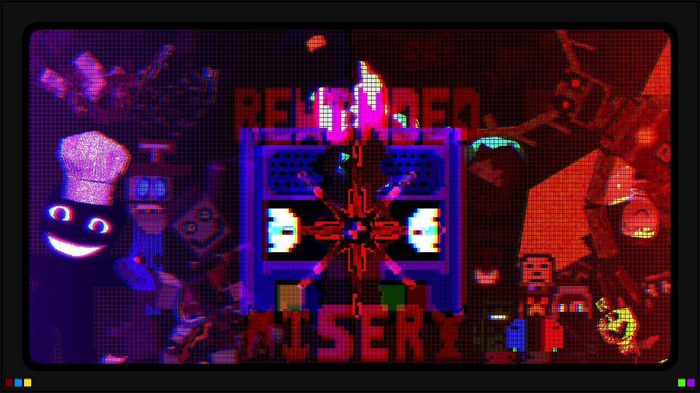
GALLERY
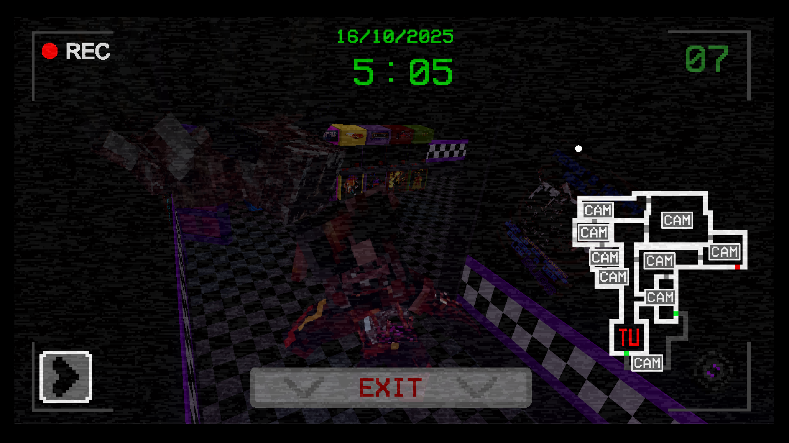
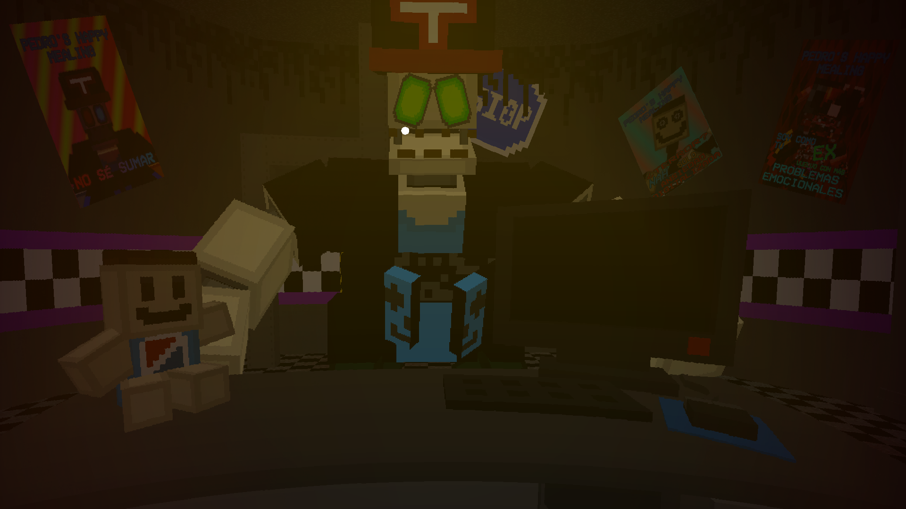
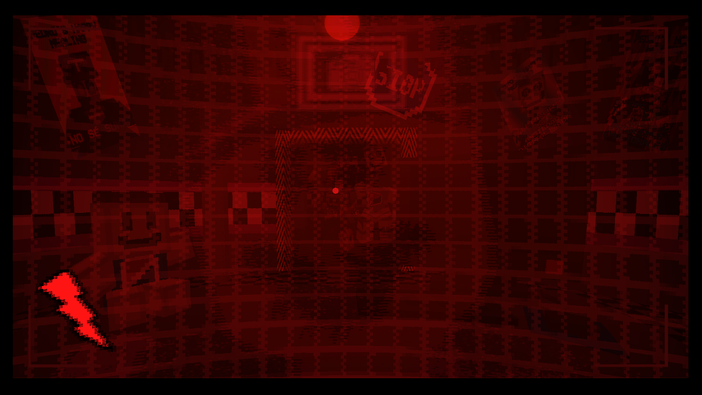
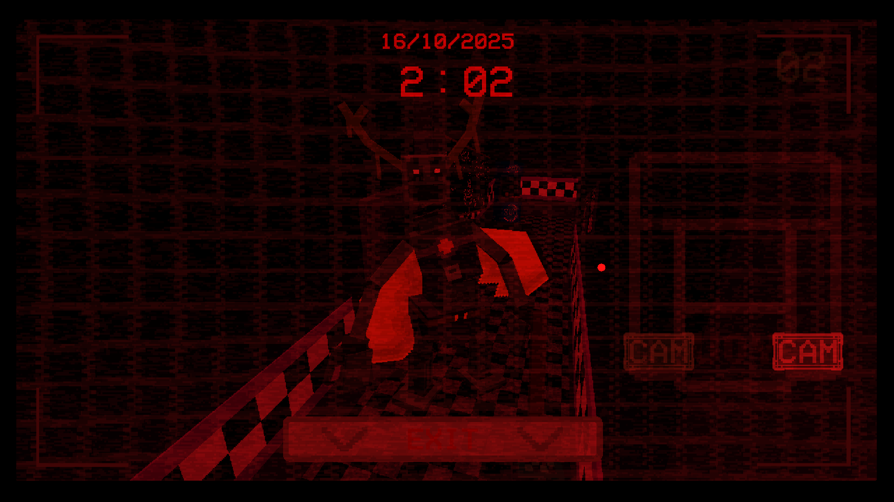
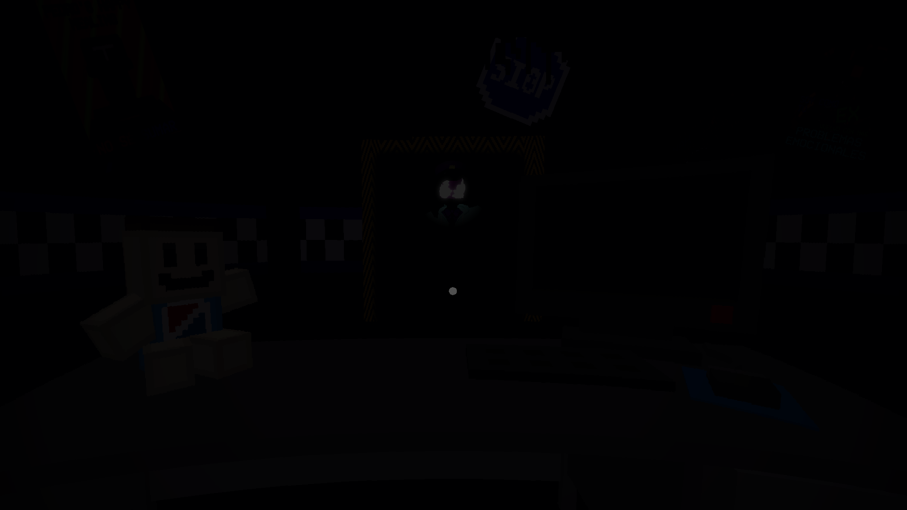
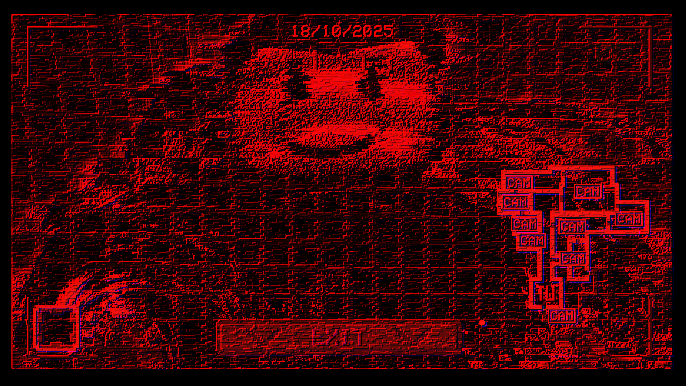
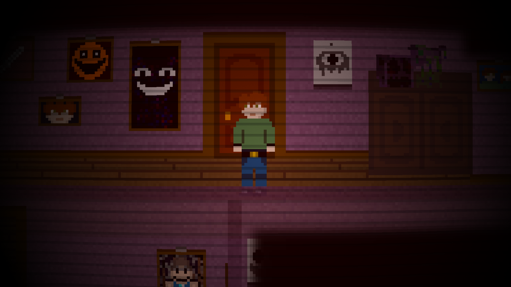
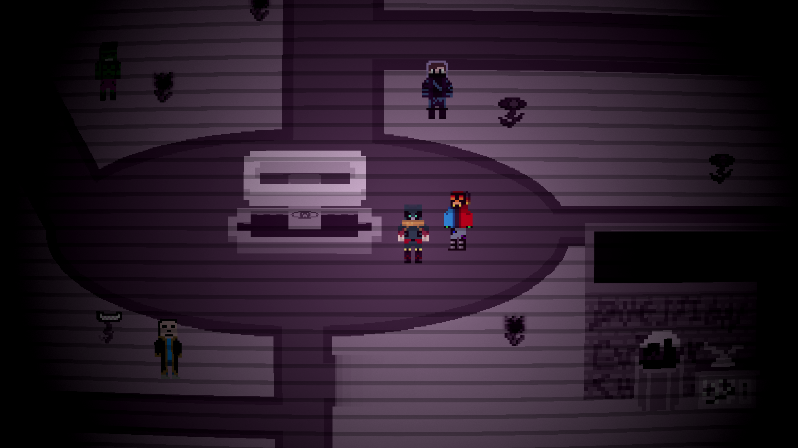
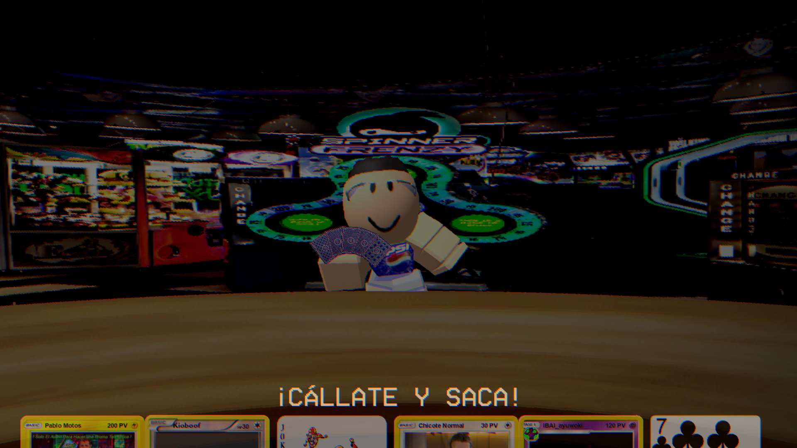
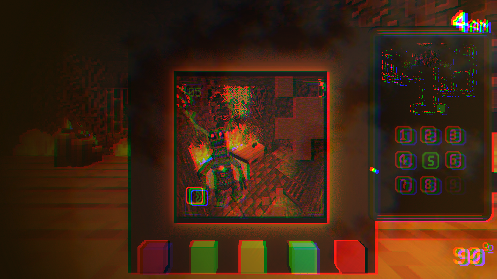
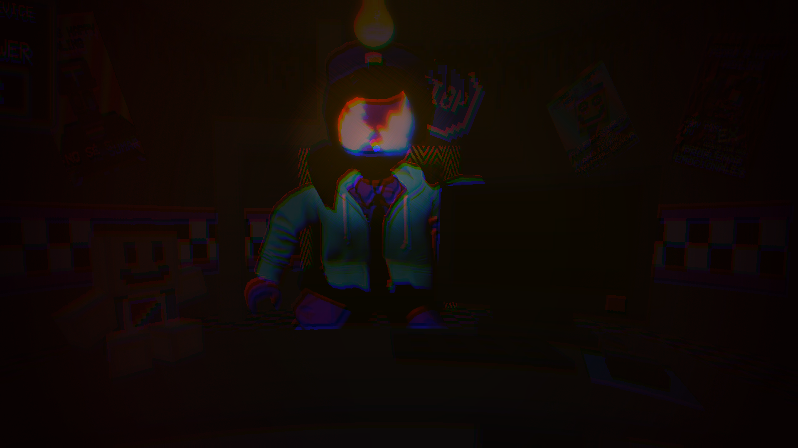